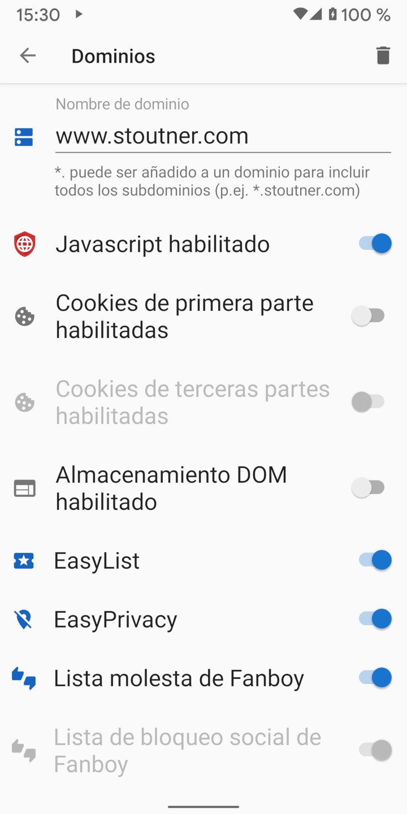

Por defecto Navegador Privado navega con Javascript, cookies y almacenamiento DOM desactivados. Sin embargo, algunas páginas web necesitan legítimamente estas características para funcionar correctamente. La configuración de dominio puede activar automáticamente un conjunto específico de características al visitar un dominio designado.
Al visitar un dominio que tiene la configuración de dominio especificada, el fondo de la casilla de texto de la URL es verde.